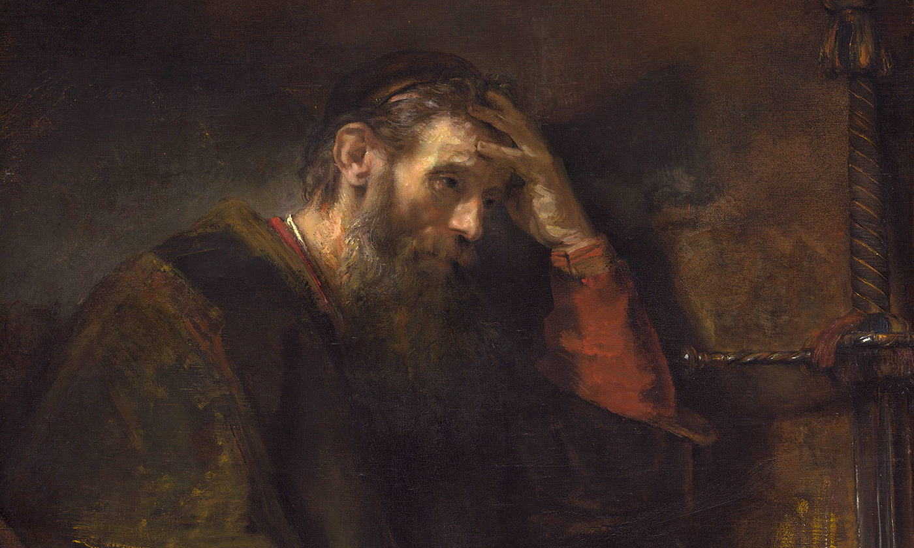

Paul The Apostle
An Apostle of Christ.
Here's a time line of Paul the Apostle's Life:
- C. A.D. 6 Born a Roman citizen to Jewish parents in Tarsus (in modern eastern Turkey)
- c. 20–30 Studies Torah in Jerusalem with Gamaliel; becomes a Pharisee
- c. 30–33 Persecutes followers of Jesus of Nazareth in Jerusalem and Judea
The Apostle Paul’s Birth & Education
- c. 33–36 Converted on the way to Damascus; spends three years in Arabia; returns to Damascus to preach Jesus as Messiah
- c. 36 Flees Damascus because of persecution; visits Jerusalem and meets with the apostles
- 36–44 Preaches in Tarsus and surrounding region
- 44–46 Invited by Barnabas to teach in Antioch
- 46 With Barnabas visits Jerusalem to bring a famine relief offering
Conversion
- 47–48 First missionary journey with Barnabas, to Cyprus and Galatia
- 49 At the Council of Jerusalem, Paul argues successfully that Gentile Christians need not follow Jewish law; returns to Antioch; confronts Peter over question of Jewish law
- 49–52 Second missionary journey with Silas, through Asia Minor and Greece; settles in Corinth; writes letters to Thessalonians
- 52 Visits Jerusalem and Antioch briefly; begins third missionary journey
- 52–55 Stays in Ephesus; writes the letters to Galatians and Corinthians
- 55–57 Travels through Greece and possibly Illyricum (modern Yugoslavia); writes letter to Romans
Mission Trips
- 57–59 Returns to Jerusalem and arrested; imprisoned at Caesarea
- 59–60 Appears before Festus and appeals to Caesar; voyage to Rome
- 60–62 Under house arrest at Rome; writes letters to Philippians, Ephesians, Colossians, and Philemon
- 62–64 Released; journeys to Spain?; writes letters to Timothy and Titus
- 64 Returns to Rome; martyred
Paul’s Arrest & Death
According to Acts, And immediately he proclaimed Jesus in the synagogues, saying, "He is the Son of God." And all who heard him were amazed and said, "Is not this the man who made havoc in Jerusalem of those who called upon this name? And has he not come here for this purpose, to bring them bound before the chief priests?" But Saul increased all the more in strength, and confounded the Jews who lived in Damascus by proving that Jesus was the Christ.
— Acts 9:20–22